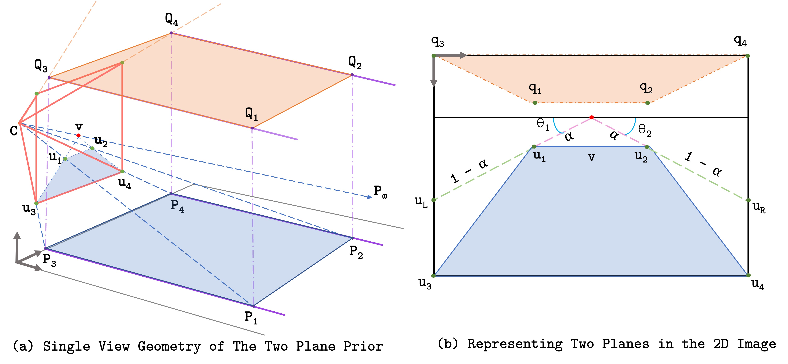

Learned Two-Plane Perspective Prior based Image Resampling for Efficient Object Detection
CVPR 2023
AbstractReal-time efficient perception is critical for autonomous navigation and city scale sensing. Orthogonal to architectural improvements, streaming perception approaches have exploited adaptive sampling improving real-time detection performance. In this work, we propose a learnable geometry-guided prior that incorporates rough geometry of the 3D scene (a ground plane and a plane above) to resample the images for efficient object detection. This significantly improves small and far-away object detection performance while also being dramatically more efficient both in terms of latency and memory. For autonomous navigation, using the same detector and scale, our approach improves detection rate by +4.1 APS or +39% and in real-time performance by +5.3 APS or +63% for small objects over state-of-the-art (SOTA). For fixed traffic cameras, our approach detects small objects at image scales other methods cannot. At the same scale, our approach improves detection of small objects by +195% or +12.5 APS over naive-downsampling and +63% or +4.2 APS over SOTA. Geometry for Image ResamplingGeometric cues are implicitly present in natural scenes, and notions of near and far are present in images. Sampling far-away image regions more would help us detect small far-away objects better. We define an inductive prior based on this scene geometry. Describing Rough Geometry of Scenes
 Transforming Plane Parameters to Saliency
Geometrically-inspired Saliency Warp \( \rightarrow \) Learnable Neural LayerDetection with a Geometrically-Constrained WarpOur method focuses on objects that are geometrically constrained to be within the considered planes. The ground plane models objects that lie on the plane and reasonably models objects far away. Nearby tall objects, and objects far above the ground plane are modelled using an additional plane.
Dependence of Warp on the Vanishing Point
|